Move Phase
Success in battle will often be achieved by the general who most effectively commands their followers around the battlefield; outflanking their enemy, controlling key areas and seizing critical positions from the grasp of their foes. Whether the goal is to assail the city of Edoras, infiltrate the tower of Cirith Ungol or flee the spider-infested forest of Mirkwood, a firm grasp of the Move Phase will be required to secure victory.
The Move Phase can be broken down into a number of steps as shown below:
-
Start of Move Phase - Any special rules that come into play at the start of the Move Phase are resolved here.
-
Declare Heroic Actions - Any Heroic Actions that can be declared in the Move Phase are declared here.
-
Player with Priority's Activation Phase - The player with Priority can Activate each of their models in turn. If a model has any special rules that come into play at the start of their player's Activation Phase, they are resolved here before any friendly model is Activated.
-
Player without Priority's Activation Phase - The player without Priority can Activate each of their models in turn. If a model has any special rules that come into play at the start of their player's Activation Phase, they are resolved here before any friendly model is Activated.
-
End of Move Phase - Any special rules that come into play at the end of the Move Phase are resolved here.
ACTIVATION PHASE
When it is time for a player's Activation Phase, they get the chance to Activate each of their models in an order of their choosing. When a model is chosen to Activate, they follow the steps below:
-
Start of Activation - Any special rules that come into play at the start of a model's Activation are resolved here.
-
Start of Move - Any special rules that come into play at the start of a model's Move are resolved here, before the model Moves.
-
Move Model - The model may Move as described on page 26. Any special rules that come into play during a model's Move are resolved here, at any point during the model's Move.
-
End of Move - Any special rules that come into play at the end of a model's Move are resolved here, after the model has finished Moving.
-
End of Activation - Any special rules that come into play at the end of a model's Activation are resolved here.
Once a model has been Activated and started their Activation, they must complete their Activation before another model can be Activated. You cannot Activate a different model during another model's Activation. You must Activate every model you control during your turn if able, though you do not have to do everything above with a model when they are Activated - they can essentially be Activated and do nothing, then you can move on to your next model. There will be situations where models you control cannot be Activated, in which case they do not follow any of the steps above. Once each model has Activated (if able), your Activation Phase ends.
MOVING MODELS (1, 2, 3)
When you come to Move a model they can Move a number of inches (") up to their Move Value, as listed in their profile. To Move a model, measure how far it can travel and then move it along the desired distance within its Move Value, making sure to always measure from the same point on the base (you can't measure from the front of a base to the back of a base, as then the front part of the base will have exceeded the model's Move Value). Models are not required to Move in straight lines, and can Move in any direction they wish - you will often find yourself moving models around corners, obstacles, other models and navigating complicated battlefields - though they may never Move more than their Move Value.
Models may not Move through other models. If a model wants to Move in between two other models, or between a model and a piece of terrain, then there must be enough space for the base of the model to fit through.
Terrain itself has a big impact on the game, with models constantly having to traverse many different types of battlefield. There may be some instances where a model will be faced with a piece of terrain that it could in theory fit through, however, its base will not fit - such as a Cavalry model Moving through a gate or a model Moving through a doorway that is slightly too narrow to squeeze its base through. In these instances, if it is obvious that a model would be able to Move through the gap, even if its base won't allow it, then you and your opponent are free to agree this is possible - in fact, we would encourage you to do this. With this in mind, it is a good idea to have a chat with your opponent before the game starts to discuss any terrain features and make sure you are all agreed before the game begins.
Generally speaking, the facing of a model doesn't matter (there are some exceptions such as a War Beast or Chariot) since we imagine that our models are constantly fighting and looking around, rather than being static playing pieces. However, there may be times where you wish to rotate your models to give a more dramatic feel, such as having them face the target of their Shooting Attack or to face who they are fighting. This is fine to do, but should only be done to give that cinematic feel and not to rotate a model to gain an in-game advantage, such as avoiding being seen by an enemy model or causing an extra In The Way Roll.
MOVING OFF THE BOARD
Models may only Move off the board in Scenarios that specifically allow it, or if they have a special rule that permits them to do so. Models may only ever Move off the board voluntarily, and cannot be forced to leave the board due to the effects of enemy special rules or Magical Powers.
When models do Move off the board, only part of their base needs to be able to exit the board for them to leave it.
MODELS UNABLE TO MOVE
Sometimes a model will be unable to Move for one reason or another, and when this is the case it will be made clear in the rules. Some examples of this are when a model has lost their Activation, such as when they have been Charged or affected by a specific Magical Power, or have been rendered unable to Move due to failing a Courage Test when attempting to Charge an enemy with the Terror special rule.
Example 1: Frodo is trying to keep up with the rest of the Fellowship. A ruler is placed next to Frodo to measure his Move Value of 4". It's important not to exceed a model's Move Value (frankly, that's cheating!). With the distance determined, Frodo Moves level with the 4" mark.
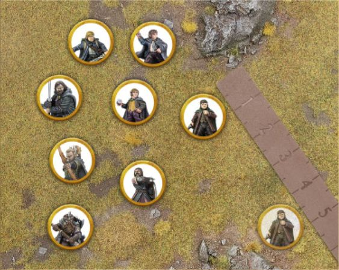
Example 2: The wall shown here is in Frodo's path. Frodo's player measures around it to work out where the Hobbit's Move will end.
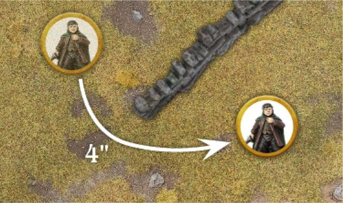
Example 3: With the other members of the Fellowship blocking his way, Frodo can only fit his base through the gap in between Sam and Gimli - note how this is the only gap big enough to fit Frodo's base through.
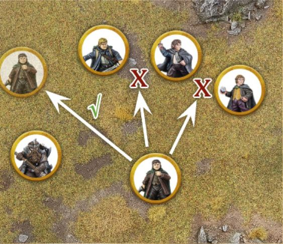
CONTROL ZONES (4)
Every model has a Control Zone - an imaginary 1" ring around the model that extends out from their base. No model may enter the Control Zone of an enemy model unless they are Charging the model in question.
There may be instances where a model is forced to enter an enemy model's Control Zone, such as being forced to Back Away after losing a Combat or failing a Jump Test and landing in another model's Control Zone. In these situations, a model may enter the enemy model's Control Zone making sure there is still a small gap between models. Note: A model still cannot choose to enter an enemy model's Control Zone without Charging - it can only happen when they are forced to.
A model's Control Zone will stop at the point where it comes into contact with an Obstacle or piece of impassable terrain.
Control Zones can be a very useful tool, allowing you to keep enemy models out of a specific area of the battlefield, or being used to protect a particular model from attack.
STUCK IN A CONTROL ZONE
If a model starts its Move within the Control Zone of an enemy model, then it has three choices:
- Remain where it is and not Move.
- Charge one of the enemy models whose Control Zone it started in.
- Move Away. In this instance, a model may Move within the Control Zone of that enemy model provided that it doesn't get any closer to the enemy model in question. This also allows a model to Charge out of an enemy model's Control Zone, providing it gets no closer to the model whose Control Zone it is leaving.
Example 4: Boromir is facing off against two Uruk-hai Scouts. Due to Boromir's Control Zone, the Uruk- hai cannot go within 1" of him unless they are Charging.
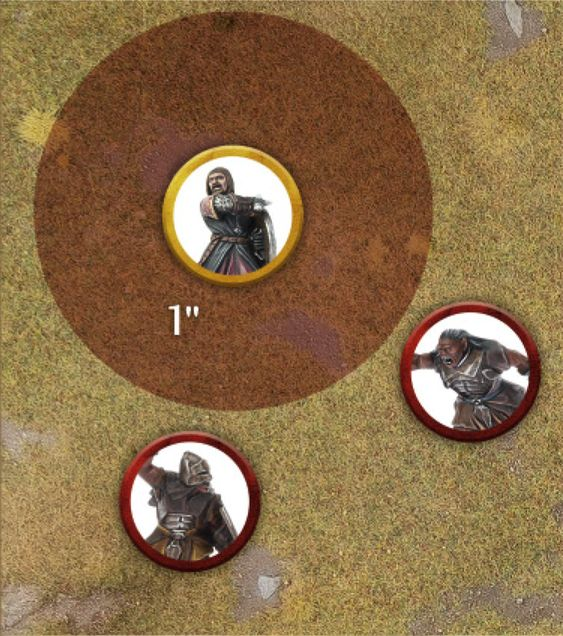
CHARGING ENEMIES (5)
If a model wants to fight an enemy model in Combat, then it must first Charge that enemy model. In order to Charge an enemy model, a model must have Line of Sight to the enemy model at the start of its Move.
To Charge, measure the distance as you would for making a normal Move and, if the model's Move Value provides it with enough movement to reach its target and get into base contact, Move the model into base contact with the enemy model. Once a model has Charged into base contact with an enemy model, they are both Engaged in Combat and the model's Activation immediately ends.
Models that are Engaged in Combat cannot be Activated during the Move Phase. However, should a model that was Engaged in Combat suddenly find themselves no longer Engaged before their turn to Activate has passed, then they may be Activated as normal.
It is quite possible, due to the order in which you Activate your models, that a model that could not make a Charge earlier in the phase might become able to as your Activation Phase continues. This makes the order in which you Activate your models extremely important. Models may end up blocking each other's ability to Move, or may end up freeing each other to Move more effectively.
CHARGES AND CONTROL ZONES (5, 6, 7, 8)
There are a few rules regarding Control Zones that are important to note when Charging:
The first is that if a model enters the Control Zone of an enemy model then they must Charge that model if they are able. The model may continue to Move within the enemy model's Control Zone if they wish, if they still have some of their Move Value remaining, in order to Charge a different point of the model's base; however, as soon as they come into base contact with the enemy model they must stop Moving. If a model enters multiple enemy models' Control Zones simultaneously, then they may choose which of them to Charge.
The second rule is that a model that is Engaged in Combat immediately loses their Control Zone whilst they remain in Combat. This means you can eliminate the Control Zones of enemy models in order to clear a route through them.
The third rule is that once a Charging model enters a Control Zone, they may ignore the Control Zones of other enemy models in order to Charge their original target. This means that no matter how densely packed enemy models are, a model is always able to Charge the first enemy model whose Control Zone it Moved into.
The fourth rule is that a model that wishes to Charge an enemy model that has lost its Control Zone may ignore the Control Zones of other enemy models that it would be impossible for them to Charge. This only applies if they cannot Charge the model due to the placement of other models making the Charge impossible.
Example 5: Gimli has Charged this Uruk-hai Scout. Because it is now Engaged in Combat, the Uruk-hai has lost its Control Zone and cannot be Activated during its player's Activation Phase, and therefore may not Move.
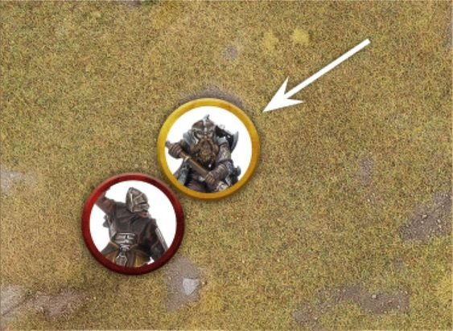
Example 6: Aragorn Charges the nearest Uruk-hai - entering its Control Zone first. As soon as he enters the Control Zone of the first Uruk-hai, Aragorn is free to Move within that Control Zone, so long as he ends up Charging the Uruk- hai whose Control Zone he entered first.
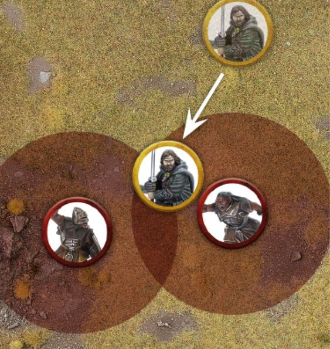
Example 7: Here there is a gap between Aragorn and Boromir which the Uruk-hai would like to Move through in order to Charge Pippin. However, because of the Control Zones of Aragorn and Boromir, the Uruk-hai cannot pass through without Charging one of the two Men.
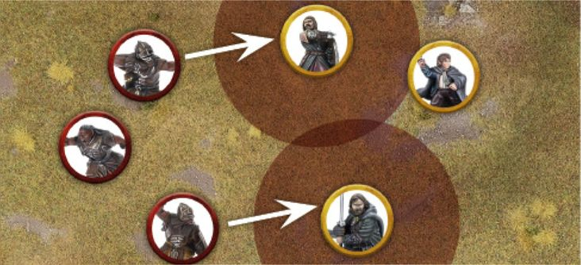
To avoid this, the Evil player has two other Uruk- hai Charge Aragorn and Boromir. Now that they are Engaged in Combat, Aragorn and Boromir have no Control Zones and so the Uruk-hai is free to Charge Pippin.
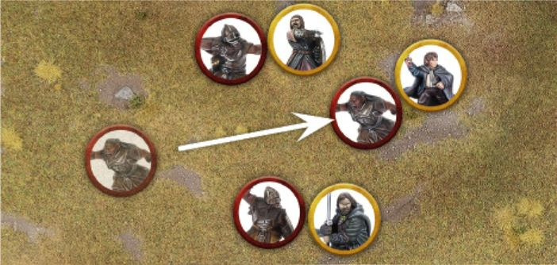
Example 8: Here, the Uruk-hai nearest to the Fellowship are all Engaged in Combat with either Legolas or Gimli and therefore have no Control Zones. Aragorn wishes to Charge the Uruk-hai nearest to him, however, he would be entering the Control Zones of the Uruk- hai behind their Engaged allies in order to do so. As there is no way of Aragorn Charging the model whose Control Zone he would be entering, he may ignore it and simply Charge the Uruk-hai he is nearest to.
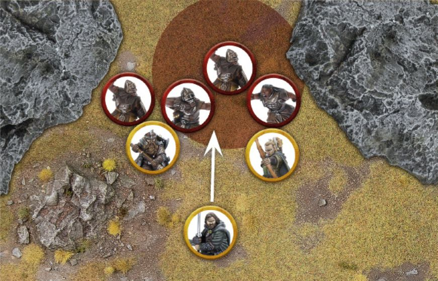
Here, Aragorn wishes to Charge the Morannon Orc straight in front of him. As that Morannon Orc is already Engaged in Combat with Gimli, and therefore has no Control Zone, it may seem at first glance that the Control Zone of the Morannon Orc with spear behind the target of Aragorn's Charge is preventing him from Charging. Luckily for Aragorn, as there is no physical way for him to Charge this Morannon Orc with spear as it is blocked off by the Orcs Engaged in Combat with Gimli and Legolas respectively, Aragorn can ignore their Control Zone and Charge his target freely.
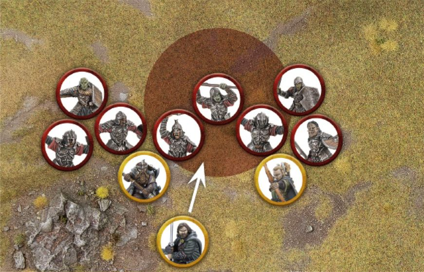
CHARGING MULTIPLE ENEMIES (9)
Models may Charge multiple enemy models should they wish. To do this, the model must have a high enough Move Value in order to reach all of its intended targets and be able to Move into base contact with them all, at which point it will be Engaged in Combat with all enemy models it is in base contact with.
Remember that after a model has entered the Control Zone of an enemy model it will ignore the Control Zones of other enemy models, and so is free to enter the Control Zones of any other enemy models as it completes its Charge against multiple enemies.
Example 9: Boromir wants to Charge two Uruk-hai at once. After entering the Control Zone of the first Uruk-hai, he continues to Move within its Control Zone in order to Move into base contact with two Uruk-hai and therefore Charge both of them.
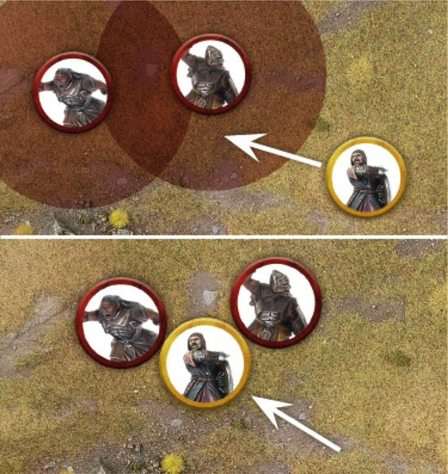
DEFENDED POSITIONS
Sometimes a model may wish to Charge an enemy model that is on the other side of a wall, hedge or other Barrier. The rules for this are fully detailed in the Fight Phase section (see page 54).
TERRAIN
Middle-earth is filled with all manner of exciting and vibrant places, all of which have their own specific terrain; from the rolling green hills of the Shire, to the rickety wooden walkways of Goblin-town, and the dense overgrown woodland of Mirkwood. It is often the battlefields that we play on that make our games feel so enjoyable and immersive, but to ensure that the games run smoothly we need a couple of rules to help govern the types of terrain.
OPEN GROUND
The majority of any battlefield will be Open Ground. This covers the likes of grassy fields, sandy beaches, cobblestone courtyards, purpose-built roads and all manner of other easy to traverse terrain. There are no rules assigned to such terrain, and models may Move over it with no penalty to their Move Value.
DIFFICULT TERRAIN (10)
Areas of loose rocks, thick undergrowth, especially long grass, crumbling rubble and other such landscapes that would make movement difficult are described as Difficult Terrain. Any model that Moves whilst in Difficult Terrain will count the distance Moved as double whilst they remain within it. So, a model that has Moved 1" through Difficult Terrain will count as having moved 2". This penalty is applied so long as any part of a model's base is within Difficult Terrain.
At the start of a battle, it is good practice to discuss with your opponent what counts as Open Ground and what counts as Difficult Terrain.
Example 10: Boromir is racing through the thick undergrowth to rescue Merry and Pippin. As this is Difficult Terrain, every 1" Boromir Moves will count as 2". Boromir has a Move Value of 6", allowing him to Move 3" through the Difficult Terrain.
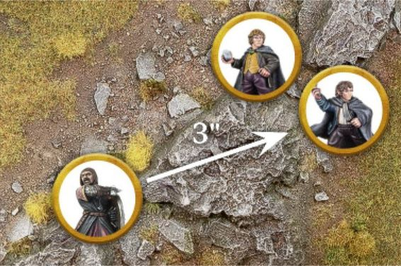
Here, Boromir Moves across 2" of Open Ground before he reaches Difficult Terrain. Since he only has 4" of his Move Value remaining, Boromir can only Move 2" into the Difficult Terrain.
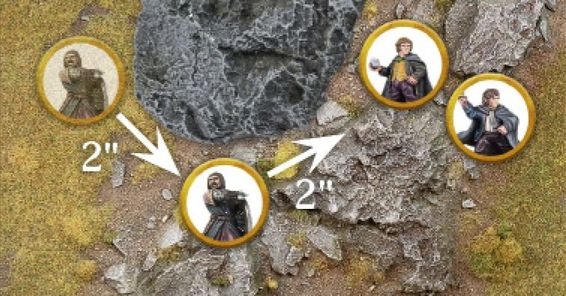
OBSTACLES (11)
Obstacles are any manner of linear object on the battlefield that impede a model's ability to Move. The likes of walls, hedges, barricades, fallen tree trunks, etc., are all good examples of an Obstacle.
A model's ability to cross over an Obstacle is determined by comparing the height of the model with the height of the Obstacle. A model can automatically cross over any Obstacle that is equal to or less than half its height without penalty - simply move the model over the Obstacle and carry on with that model's Move. This means that the likes of a Man or Elf will be able to stride over an Obstacle that a Dwarf or Hobbit cannot. Whilst this may seem unfair, it is true that the little folk would struggle more with some Obstacles than the big folk might.
A model can attempt to cross over an Obstacle greater than half its height, but must take a Jump Test or Climb Test in order to do so. Usually, you will be able to tell if a model can cross an Obstacle just by looking at it. In situations where you need to check the height of a model, measure the model from the top of its head to the bottom of its feet. Be sure to always work out the model's 'true height'. What this means is to use the height of what the model should be (including its base), and not taking into account any strange poses such as crouching, being stood on a large rock or leaping off a piece of terrain - and be sure to agree this with your opponent. Once this has been done, compare it to the height of the Obstacle to see whether a test is needed.
Example 11: Aragorn wishes to Move over this low wall. As the wall is less than half of Aragorn's height, he may simply Move over it with no penalty.
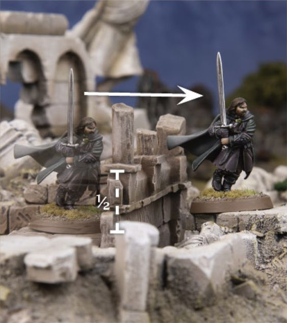
JUMPING (12)
From fallen trees to low walls, a battlefield will likely have a number of Obstacles that will impede a model's Movement and will need to be Jumped over in order for a model to keep Moving. Any attempt to cross over an Obstacle is done with a Jump Test.
A model may attempt to Jump over an Obstacle that is up to but no greater than its own height. If an Obstacle is greater than the model's height, then it must take a Climb Test instead.
To make a Jump Test, the model Moves into base contact with the Obstacle it wishes to Jump over and rolls a D6, consulting the Jump Table to find out how successful the attempt has been.
The horizontal distance a model Moves when it Jumps will still count towards the distance a model can Move during their Activation; however, the vertical distance will not.
JUMP TABLE
| D6 | Result |
|---|---|
| 1 | Stumbles and Fails: The model does not Jump the Obstacle. The model remains where it is and its Activation immediately ends. |
| 2-5 | Success: The model successfully Jumps the Obstacle; place it on the other side of the Obstacle in base contact. If the model is now within the Control Zone of an enemy model, it must Move the minimum distance required in order to Charge that model, so long as it doesn't exceed its Move Value. Otherwise, the model's Move immediately ends, even if within the Control Zone of an enemy model. If the model lands in the Control Zones of multiple enemy models, it will Charge the closest one as described above. |
| 6 | Effortlessly Bounds Across: The model successfully Jumps the Obstacle; place it on the other side of the Obstacle in base contact. It may then continue its Activation as normal. |
Example 12: The Hobbits are fleeing from the pursuing Nazgûl and wish to try to cross the wall in order to escape. As the wall is no taller than the Hobbits, but more than half their height, they will require a Jump Test.
Frodo goes first, Moves into base contact with the wall and makes his Jump Test. He rolls a 3, and Moves over the wall to the other side. His Move then ends.
Pippin goes second and also takes a Jump Test, rolling a 6. Not only does Pippin cross the wall, but he may continue to Move if he wishes.
Merry goes next and takes his Jump Test, rolling a 4 and Moves across to the other side. As this puts Merry into the Control Zone of an enemy model, he must Move the minimum distance possible to Charge if he wishes.
Finally, seeing his friends clamber over the wall, Sam tries to do the same. Unfortunately, Sam rolls a 1 for his Jump Test and so fails to cross the wall and his Activation immediately ends - leaving him at the mercy of the Nazgûl.
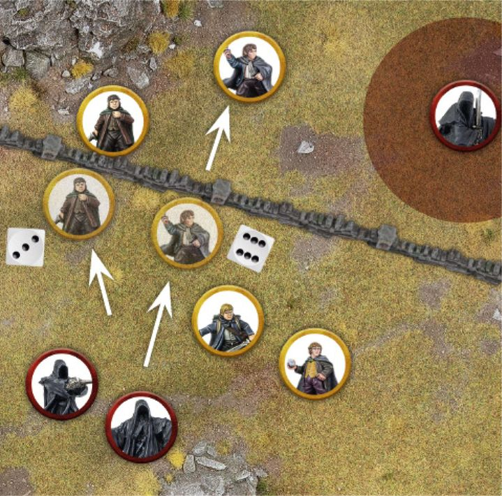
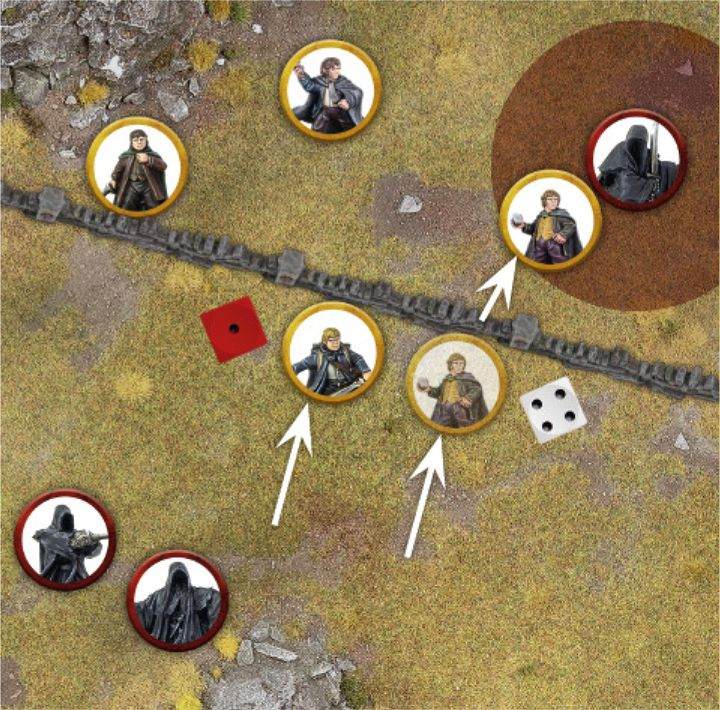
LEAPING (13, 14)
The likes of rickety walkways, yawning chasms and other such terrain provide plenty of opportunities for models to Leap across gaps. Any such attempt must be resolved with a Leap Test.
For a model to be able to attempt to Leap over a gap, the gap cannot be wider than twice the height of the model (compare the model and the gap in question if you are unsure) and they must have enough Move Value to be able to fully reach the other side - otherwise it is just too far to Leap across. A model may also attempt a Leap Test to try to Leap over a river in the same manner.
To make a Leap Test, the model Moves to the edge of the gap it wishes to Leap over and rolls a D6, consulting the Leap Table to find out how successful the attempt has been.
LEAP TABLE
| D6 | Result |
|---|---|
| 1 | Stumbles and Fails: The attempt to Leap has gone wrong. The model falls to the bottom of the gap halfway between where they leapt from and where they were leaping to, suffers Falling Damage (see page 35) and becomes Prone. The model's Activation immediately ends. |
| 2-5 | Success: The model successfully Leaps the gap; place it on the other side of the gap in base contact with the edge. If the model is now within the Control Zone of an enemy model it must Move the minimum distance required in order to Charge that model, so long as it doesn't exceed its Move Value. Otherwise, the model's Move immediately ends, even if within the Control Zone of an enemy model. If the model lands in the Control Zones of multiple enemy models, it will Charge the closest one as described above. |
| 6 | Effortlessly Bounds Across: The model successfully Leaps the gap; place it on the other side of the gap in base contact with the edge. It may then continue its Activation as normal. |
Example 13: Gimli is being chased by two Moria Goblins and wishes to put some distance between them by Leaping over a chasm to safety. Gimli Moves to the edge of the gap and takes a Leap Test. Rolling a 4, Gimli successfully Leaps the gap and is placed on the other side. His Move then immediately ends.
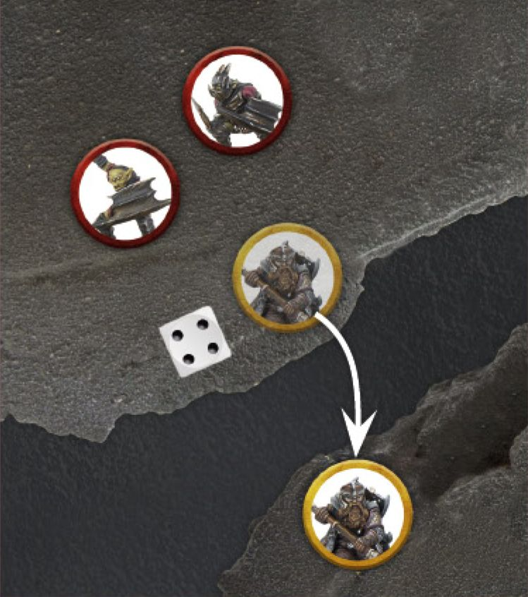
Example 14: The Balrog is hot on the heels of the Fellowship and they must do all they can to escape. Aragorn decides to Move over a small fallen pillar - he must take a Jump Test. Boromir wants to put some height between himself and the fiery demon, and so chooses to scramble up a rocky cliff - he must take a Climb Test.
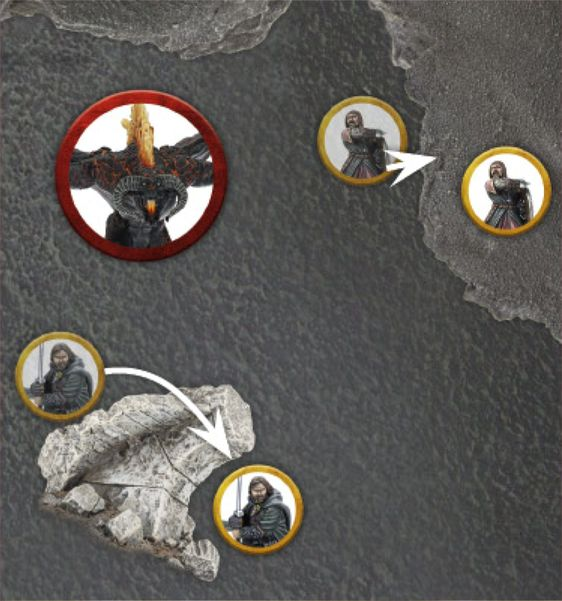
CLIMBING (14, 15)
In order to climb Obstacles that are greater than a model's height, such as tall walls, scaffolding or rock faces, a model will be required to take a Climb Test. It is also important to note that for a model to attempt a Climb Test there must be some way for them to scale the surface, such as handholds, jutting rocks, wooden crosspieces, etc. To make a Climb Test, the model Moves to the bottom of the surface they wish to Climb and rolls a D6, consulting the Climb Table to find out how successful the attempt has been. Cavalry models may not take Climb Tests. Models must Climb directly upwards, and the vertical distance a model Moves as part of a Climb Test is counted towards the distance a model can Move during their Activation. Climbing counts as Moving through Difficult Terrain.
CLIMB TABLE
| D6 | Result |
|---|---|
| 1 | Fall: The model Falls to the ground and becomes Prone at the bottom of the Obstacle they attempted to Climb. If the model was already at ground level, nothing else happens. However, if the model was higher than this then it will suffer Falling Damage. In either situation, the model's Activation immediately ends. |
| 2-5 | Success: The model successfully Climbs the Obstacle until it has reached its Move Value or reaches the top. If the model reaches the top, place it on top of the Obstacle in base contact with the edge. If the model is now within the Control Zone of an enemy model, it must Move the minimum distance required in order to Charge that model, so long as it doesn't exceed its Move Value. Otherwise, the model's Move immediately ends, even if within the Control Zone of an enemy model. If the model lands in the Control Zones of multiple enemy models, it will Charge the closest one as described above. |
| 6 | Swift Ascent: The model successfully Climbs the Obstacle until it has reached its Move Value or reaches the top. If the model reaches the top, place it on top of the Obstacle in base contact with the edge. It may then continue its Activation as normal. |
Example 15: Aragorn, Legolas and Gimli are cut off from their allies at Helm's Deep and need to Climb the scaffolding to reach them. Aragorn spends 1" of his Move Value to reach the scaffolding and then takes a Climb Test. Rolling a 4, Aragorn is successful and Moves to the top. Legolas follows suit and rolls a 6 for his Climb Test. He Moves up the scaffold and then spends his remaining Move Value (note that, as Climbing is considered to be done in Difficult Terrain, he has precious little left!). Finally, Gimli reaches the bottom of the scaffold but rolls a 1 for his Climb Test. He fails and becomes Prone. A Prone Marker is placed next to him and his Activation immediately ends.
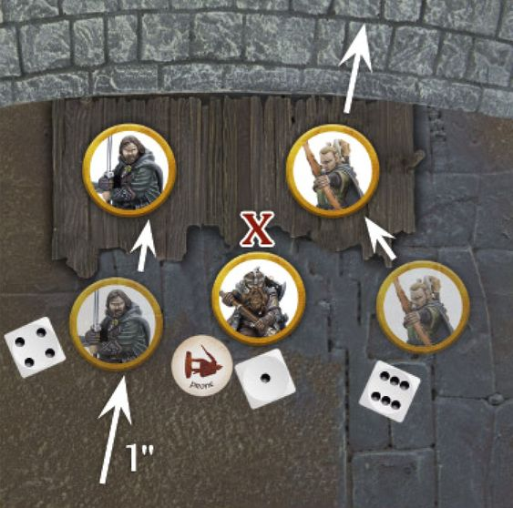
CLIMBING TALL STRUCTURES
In rare circumstances, models may wish to Climb a taller structure that will take more than a single turn to reach the top. In these instances, either perch the model in a satisfactory way at roughly the right height or leave the model at the bottom of the Obstacle with a dice next to it to show how high up the structure it is. If a model starts its Activation part way up a structure in this manner, then it must attempt to make a Climb Test during their Activation in order to continue Climbing.
UNSCALABLE TERRAIN
Any terrain that has a sheer surface and has no way of being scaled (such as a fortress wall), or has no place to safely balance a model on top without the risk of the model falling off (such as a small pillar or tree) cannot be Climbed during a game. This is to prevent models finding themselves in unlikely positions such as balanced on tree tops or halfway up the side of a wall. It is a good idea to discuss with your opponent before the game which terrain can be climbed, if any. If it doesn't look great and doesn't instinctively 'feel right' then steer clear of it.
LADDERS, ROPES AND SIMILAR (16)
The use of a ladder or length of rope makes Climbing significantly easier. Climbing up or down one of these doesn't require a Climb Test and doesn't count as Difficult Terrain. Instead, the model may simply Move up or down just as if they were Moving normally.
Example 16: Frodo doesn't fancy Climbing this rockface and so finds a ladder to use instead. The ladder is 3" high, and so he Moves up it at the cost of 3" of his Move Value.
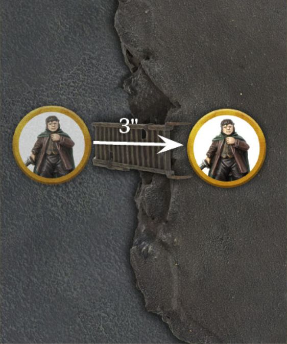
DESCENDING
Climb Tests can also be used for a model to Climb down as well as up; this is called Descending. A model can always Descend a distance equal to its own height without penalty (i.e., the distance Descended in this way will not count towards the amount a model can Move during their Activation).
If a model wishes to Descend further than this, then they must take a Climb Test exactly as described previously, with the exception that they will Move down instead of up. There must also be some way for the model to Climb down, such as footholds, wooden structures, etc.
FALLING AND FALLING DAMAGE (17)
A model that falls in any situation will become Prone at the bottom of whatever it has fallen from. If a model would fall and land overlapping another model, simply move the falling model out of the way the minimum distance so that it is not overlapping or in base contact with another model. If the distance the model has fallen is equal to or less than their own height, they will suffer no further effects, though their Activation will immediately end.
If a model falls a distance greater than their own height, then they will suffer Falling Damage. When a model suffers Falling Damage, they will take one Strength 3 hit, plus another Strength 3 hit for every full 1" greater than their height they have fallen.
Example 17: Gimli has tried to Climb down this rockface to aid his allies. However, Gimli has rolled a 1 for his Climb Test and so falls to the ground at the bottom of the rockface and, as the distance he fell was greater than his own height he will suffer Falling Damage. The distance Gimli fell was two full inches taller than his height, and so he will suffer three Strength 3 hits - one for the Falling Damage, and a further two for the extra distance he has fallen.
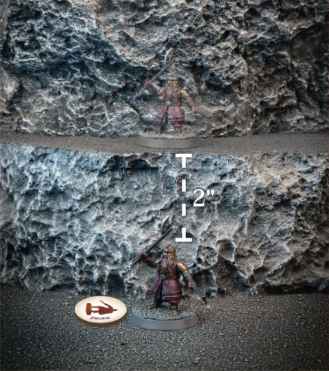
PRONE MODELS
During a game, there will likely be times where models will find themselves Prone. Whether this is as a result of a failed Climb Test, being on the receiving end of a Cavalry Charge or some other effect, it is important to understand how Prone models interact with the game.
If a model is ever Knocked to the Ground, then they will immediately become Prone and a Prone Marker should be placed next to them as a reminder.
CONTROL ZONES
Models do not have a Control Zone whilst they are Prone.
PRONE MODELS AND LINE OF SIGHT
When a model is Prone, we imagine that it is writhing on the floor, cowering beneath a shield or scrabbling to try to regain its footing. Usually, another model would be able to see over a model that is Prone, though there may be some instances where this may not be the case (such as a Cave Troll being Prone). For these reasons, a Prone model is considered to be half its normal height (from the top of its head to its feet) for the purpose of working out Line of Sight.
CRAWLING (18)
When a Prone model Moves it does so by Crawling, instead of Moving normally. A Crawling model may only Move up to 1" regardless of the kind of terrain it is in, cannot make Jump, Leap or Climb Tests, and the only other thing it can do when it Moves is to Stand Up.
Prone models may not Charge - they must Stand Up first.
Example 18: Frodo is currently Prone and wishes to Crawl during his Move. Frodo Crawls 1" and then Stands Up, which because he Crawled is all the Moving he can do during his Move. As Frodo has now stood up, the Prone Marker is removed and he is free to use his full Move Value next turn.
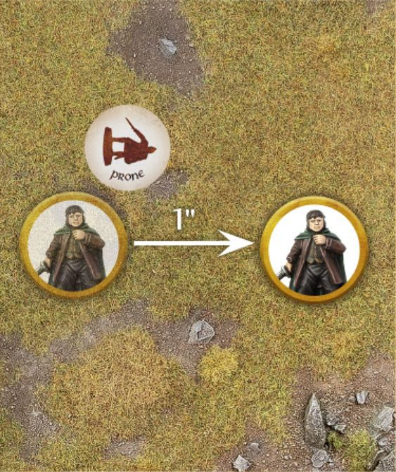
STANDING UP AND LYING DOWN
During its Move, a Prone model may Stand Up at the cost of half its Move Value (so a model with a Move Value of 6" would need to spend 3" to Stand Up), and may then use its remaining Move Value to Move as normal, including Charging. A standing model may Lie Down also at the cost of half its Move Value. A model may not both Stand Up and Lie Down in the same Activation, and if it does either then it will still count as having Moved during their Activation.
A Prone model may Stand Up whilst in the Control Zone of an enemy model without Charging them, so long as they Move no closer to that enemy model.
CHARGING A PRONE MODEL
Prone models can be Charged as normal. As they have no Control Zone, enemy models can Move within 1" of them without having to Charge them if they wish, provided they do not come into base contact with them. If they do, they will count as having Charged the Prone model.
JUMPING
Models may attempt to Jump Over Prone models exactly as if they were an Obstacle, with the following exceptions: - A model that wishes to Jump Over an enemy model that is less than half its height must still take a Jump Test. - If a model attempts to Jump Over an enemy model and rolls a 1, they do not Jump Over the enemy model and instead must Charge them at the point in which they tried to Jump Over them. - If a model attempts to Jump Over an enemy model and rolls a 2-5, they will Jump Over the enemy model as normal and may choose to either Charge the model they Jumped Over after doing so, or instead be separated slightly from the enemy model and end their Move. - If a model attempts to Jump Over an enemy model and rolls a 6, they will Jump Over the enemy model and may continue their Move as normal.
Example 19: This Moria Goblin is Prone and Gimli wishes to Jump Over it, and so must make a Jump Test. Rolling a 5, Gimli successfully Jumps Over the Goblin and is placed on the other side of it, slightly separated from being in base contact. Gimli then has two choices: either to end his Move where he is, or to Move into base contact with the Goblin and Charge him - Gimli chooses the latter.
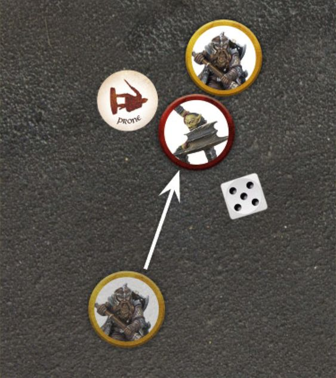
REINFORCEMENTS (20)
Sometimes models may be kept aside to enter the battle later on. When they do, they will typically enter via the rules for Reinforcements.
When Reinforcements enter the battlefield, they will do so during their player's Activation Phase of the Move Phase, after all of that player's models on the board have Activated (if able). When models Move onto the board in this manner, a point is chosen on a specified board edge and the model will Move onto the board from that point following all the usual rules for Moving, with the exception that they may not Charge for any reason (including the effects of an enemy rule).
In Matched Play games, when a Warband is chosen to Move onto the board via the rules for Reinforcements, the whole Warband will move on together. When the point at which the Warband will enter from has been chosen, the Warband's Captain must enter first from that point. Then, any Followers from that Warband may enter the board from any point within 3" of the initial chosen point.
The player who chooses where the Warband will enter the board must choose a place where the whole Warband can physically make it onto the board and be deployed. If this is not possible for whatever reason, then the Warband will enter on the next turn instead, where they will roll again with a +1 bonus to the roll to determine which part of the board they enter from.
Example 20: Haleth's Warband has arrived via the rules for Reinforcements. First, Haleth Moves onto the board from the chosen point. After this, all of Haleth's Followers may Move onto the board from any point within 3" of the chosen point, one by one.
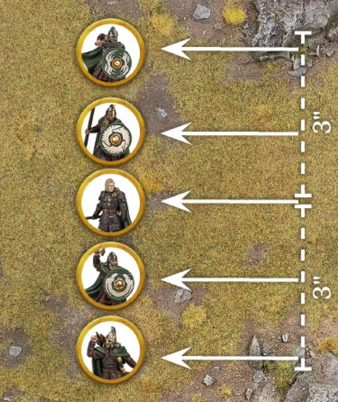